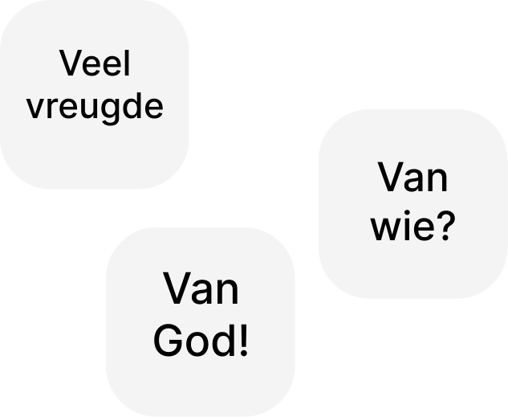

'ἀμὴν ἀμὴν λέγω σοι, ὅτε ἦς νεώτερος, ἐζώννυες σεαυτὸν καὶ περιεπάτεις ὅπου ἤθελες· ὅταν δὲ γηράσῃς, ἐκτενεῖς τὰς χεῖράς σου, καὶ ἄλλος σε ζώσει καὶ οἴσει ὅπου οὐ θέλεις.
τοῦτο δὲ εἶπεν σημαίνων ποίῳ θανάτῳ δοξάσει τὸν θεόν. καὶ τοῦτο εἰπὼν λέγει αὐτῷ· ἀκολούθει μοι.
ἐπιστραφεὶς ὁ Πέτρος βλέπει τὸν μαθητὴν ὃν ἠγάπα ὁ Ἰησοῦς ἀκολουθοῦντα, ὃς καὶ ἀνέπεσεν ἐν τῷ δείπνῳ ἐπὶ τὸ στῆθος αὐτοῦ καὶ εἶπεν· κύριε, τίς ἐστιν ὁ παραδιδούς σε;
τοῦτον οὖν ἰδὼν ὁ Πέτρος λέγει τῷ Ἰησοῦ· κύριε οὗτος δὲ τί;
λέγει αὐτῷ ὁ Ἰησοῦς· ἐὰν αὐτὸν θέλω μένειν ἕως ἔρχομαι, τί πρὸς σέ; σύ μοι ἀκολούθει.' (Johannes XXI, 18-22)
Laten we de volgende belangrijke vragen beschouwen, die licht werpen op de wil van God:
De antwoorden op deze vragen zijn niet zo voor de hand liggend als ze op het eerste gezicht lijken.
Gods vergeving betekent niet altijd de opheffing van alle gevolgen van de zonde. Dit was in het bijzonder het geval bij David: in de verzen van 2 Samuël XII, 13 wordt de zonde van David door God vergeven, maar het hele twaalfde hoofdstuk is gewijd aan het thema van de gevolgen. Daar klinkt met name ook de profetie over de opstand van Absalom, die daadwerkelijk in vervulling ging in 2 Samuël XVI, 20-22; het pasgeboren kind van David en Bathseba sterft, zoals de Heer had voorzegd, het vasten en bidden van David baten niet, in plaats daarvan gaat hij naar Bathseba als zijn vrouw, troost haar, slaapt met haar, en uit hen wordt Salomo geboren, die de naam Jedidja krijgt, de lieveling des Heren
.
Een soortgelijke geschiedenis vond plaats met Mozes en Aäron (Numeri XX, 6-13). Omdat zij niet op God vertrouwden om de heiligheid van God aan het volk te tonen, konden zij het volk niet het Beloofde Land binnenleiden. Dat deed Jozua, de vertrouwde dienaar van Mozes en een van de verspieders van het Beloofde Land (Numeri XIII; Jozua).
Toen Salomo begon te zondigen, was het gevolg de verdeling van het koninkrijk Israël in tweeën, hetgeen de profeet ook had aangekondigd.
Geldt hetzelfde voor Petrus?
Overal in de genoemde oudtestamentische verhalen handelt God ter wille van Zijn heerlijkheid. En hier zegt Christus dat Petrus God zal verheerlijken…
De apostel Paulus zegt: Allen hebben gezondigd en derven de heerlijkheid Gods
(Romeinen III, 23), een nauwkeurigere vertaling luidt komen tekort aan
(ervaren een gebrek aan
) de heerlijkheid van God. Dat wil zeggen, een van de gevolgen van de zonde is de ontzetting uit Gods heerlijkheid. Heerlijkheid
is hier Gods genade, maar dan geschonken aan de reinen en zondelozen. Daarom leven de gelovigen, hoewel gered door genade, na gezondigd te hebben niet door de heerlijkheid, maar door de genade.
De slotsom van het herstel van Petrus zal de heerlijkheid van God zijn.
Gods heerlijkheid is hier niet iemands persoonlijke voorrecht; zij zou iedereen eigen moeten zijn, maar door de zonde ervaren mensen een gebrek eraan…
Het leven van een mens voltrekt zich vaak niet in de overvloed van Gods heerlijkheid, maar zelfs bij mensen die dicht bij God staan, is het vaker ingebed in de genade van Gods barmhartigheid dan in de heerlijkheid.
Christus verweet Petrus eerder dat hij niet bedacht wat van God is, maar wat van de mensen is
— precies in verband met Petrus' houding ten opzichte van het lijden van Christus.
Mensen zoeken vaak vergeving van zonden, maar veel minder vaak de heerlijkheid van God. Toch is dat niet hetzelfde. En het tweede is groter dan het eerste.
Laten we ons herinneren hoe Christus tien melaatsen genas, maar slechts één terugkeerde om God uitdrukkelijk te verheerlijken. Christus zei alleen tegen hem: Uw geloof heeft u behouden
(Lukas XVII, 11-19).
Toen Christus de verlamde genas op grond van het geloof van degenen die voor hem zorgden, vergaf Hij hem zijn zonden. En daarna, opdat de mensen zouden weten dat Hij de macht heeft om zonden te vergeven, genas Hij hem, en deze verheerlijkte God (Lukas V, 17-26).
De genezing van de blindgeborene vond ook plaats opdat de werken Gods openbaar zouden worden (Johannes IX).
Toen Christus aan Ananias verscheen en hem stuurde om Saulus — die Paulus werd — te genezen en te dopen, antwoordde Hij op de woorden van Ananias: 'πορεύου, ὅτι σκεῦος ἐκλογῆς ἐστίν μοι οὗτος τοῦ βαστάσαι τὸ ὄνομά μου ἐνώπιον ἐθνῶν τε καὶ βασιλέων υἱῶν τε Ἰσραήλ· ἐγὼ γὰρ ὑποδείξω αὐτῷ ὅσα δεῖ αὐτὸν ὑπὲρ τοῦ ὀνόματός μου παθεῖν'. Dat wil zeggen: want Ik zal hem in het verborgene tonen hoezeer hij om Mijn Naam moet lijden (ondervinden, doorstaan)
(Handelingen IX, 15-16).
De apostel Paulus zelf getuigt op een andere plaats wanneer hij schrijft: 'αὐτὴ ἡ κτίσις ἐλευθερωθήσεται ἀπὸ τῆς δουλίας τῆς φθορᾶς εἰς τὴν ἐλευθερίαν τῆς δόξης τῶν τέκνων τοῦ θεοῦ' — sprekend over de vrijheid van de heerlijkheid van de kinderen Gods
(dat wil zeggen, de deelname aan Gods heerlijkheid en het worden van Gods kinderen).
Als we terugkeren naar de vergeving en het herstel van Petrus, dan zei Christus dit om aan te duiden (een teken te geven) 'ποίῳ θανάτῳ δοξάσει τὸν θεόν' (met welke dood hij God zou verheerlijken
). De dood op zich verheerlijkt God niet, maar wat voor soort dood
wel. Hoe het ook zij, de woorden van Christus tot Petrus getuigen zowel van vergeving als van de toekomstige verheerlijking van God.
Laten we ons ook de vergeving van de zondares herinneren die op overspel was betrapt (Johannes VIII, 1-11). Ga heen en zondig van nu af niet meer!
.
En hier moeten we iets belangrijks inzien. Is het Gods heerlijkheid dat er gevolgen zijn van menselijke zonden nadat God ze heeft vergeven? Verheerlijkt de dood van de pasgeborene, de zoon van David, God? Verheerlijkt de opstand van Davids zoon Absalom God? Verheerlijkt het feit dat Mozes en Aäron het Beloofde Land niet binnengingen God? Verheerlijkt het God dat Saulus, als Paulus, veel zal ondervinden, doorstaan en lijden (zie met name: 2 Korintiërs XI, 21-33, XII, 1-19)? Nee, maar de trouw van mensen in zware omstandigheden verheerlijkt God wel. Daaronder valt ook de latere trouw van Petrus tot in de marteldood. Want door deze trouw worden zij aan Christus gelijkvormig. Het enige lijden dat op zichzelf, als zodanig, God verheerlijkt, is Zijn eigen, vrijwillige lijden aan het kruis. Ons lijden is door Hem aangenomen, en door Zijn striemen is ons genezing geworden
, zoals Jesaja profeteert. Maar ook het lijden van de gelovigen kan, door hen aan Christus gelijkvormig te maken, een uiting van Gods heerlijkheid worden — niet meer op zichzelf, maar als een deelname aan het heerlijke lijden van Christus.
Zoals geschreven in het essay via de link:
https://oleksandr-zhabenko.github.io/en/commentaries/15072023.html
Als de Godmens hoefde Christus geen lijden te ondergaan, maar volgens Gods wil en toelating (hier vallen ze samen) nam Hij het lijden, waaraan de schepping na de zonde van de mensheid werd onderworpen, op Zich. Hij had niet hoeven sterven, maar de dood, die door de zonde de wereld is binnengekomen en zich zelfs heeft uitgestrekt tot degenen die niet gezondigd hadden
(Romeinen V, 12-21), nam Hij op Zich volgens Gods wil en toelating (hier vallen ze samen). Omdat Hij de Godmens is, voelde Hij in Zichzelf (door het op Zich te nemen volgens Gods wil en toelating) onze Godverlatenheid als gevolg van onze zonden, en daalde Hij met Zijn ziel neer in de hel, hoewel Hij daar als Zondeloze niet had hoeven afdalen. Dit alles deed Hij alsof Hij een zondaar was, terwijl Hij zonder zonde was, Hij heeft onze ziekten op Zich genomen en onze smarten gedragen
(Jesaja LIII, 4-5). Paulus getuigt daar ook van en zegt: Is Paulus (hij spreekt over zichzelf in de derde persoon) dan voor u gekruisigd?
(1 Korintiërs I, 11-13). Zelfs als Paulus zichzelf had overgegeven om voor de mensen te lijden, zou dit geen verzoenende kracht hebben gehad, omdat daar geen Goddelijke wil voor zou zijn, slechts Gods toelating, want het is niet de wil van God dat een van deze kleinen verloren gaat
(overigens, de naam Paulus betekent klein
) (Mattheüs XVIII, 12-14). Christus daarentegen nam alles vrijwillig op Zich; Hij is de Enige Die zo is, Hij kwam om te zoeken (door te worden en alles te ervaren wat kenmerkend is voor) en te redden (door zondeloos, trouw aan God te blijven en uit de doden op te staan) wat verloren was (zondige mensen, de schepping die lijdt buiten haar eigen zonden om)
(Lukas XIX, 10).
We moeten ook de heilige apostelen en martelaren gedenken. Velen van hen aanvaardden de marteldood als een gave van God. Maar zoals hierboven vermeld, heeft hun lijden, zelfs al is het vrijwillig, geen verzoenende of verlossende kracht. Het is met andere woorden niet nodig
voor God. God ontfermt Zich over de heiligen, niet vanwege hun ascetische prestaties, maar vanuit Zijn genade door het kruisoffer van Christus. Christus alleen is de Enige Verlosser. Juist in die zin is het niet Gods wil dat iemand anders dan Christus lijdt. Maar het is wel Gods wil dat de gelovigen trouw blijven. Het is Gods wil om een voorbeeld voor anderen te zijn. God wil dat martelaren en apostelen, zelfs in hun lijden, trouw zijn, en dat hun geduld en liefde, hoop en geloof een voorbeeld ter navolging vormen voor anderen. Daarom laat God hun lijden toe. God heeft geen behoefte aan lijden, maar het feit dat de gelovigen het aanvaarden, brengt hen dichter bij God, doordat het getuigt van hun trouw en standvastigheid in het goede.
Einde citaat.
Zie ook:
https://oleksandr-zhabenko.github.io/en/commentaries/26012026.html
Wanneer Christus Petrus dus van tevoren over zijn marteldood vertelt, is dit geen verwijt, Hij zegt niet dat er nog iets is overgebleven
, maar Hij zegt dat dit lijden de weg van Petrus
is, de weg die Christus eerder is gegaan (Johannes XIII, 36), een weg waardoor het lijden van Petrus definitief verenigd zal worden met het lijden van Christus, en meer nog, Petrus zelf met Jezus Christus. Daarom zegt Hij onmiddellijk daarna: Volg Mij!
.
De dood van Petrus verheerlijkt God niet op zichzelf, maar door de deelname aan de reddende en heerlijke dood van de Zoon van God, de Heer Jezus Christus.
Laten we ook kijken naar het bekende voorbeeld van de vogeltjes in het Evangelie:
ik citeer:
https://oleksandr-zhabenko.github.io/en/commentaries/26062025.html
Mattheüs X, 29 — 'οὐχὶ δύο στρουθία ἀσσαρίου πωλεῖται; καὶ ἓν ἐξ αὐτῶν οὐ πεσεῖται ἐπὶ τὴν γῆν ἄνευ τοῦ πατρὸς ὑμῶν' — 'oukhi duo strouthia assariou poleitai? kai hen ex auton ou peseitai epi ten gen aneu tou patro hymon' - Worden niet twee musjes voor een duit verkocht? En niet één daarvan zal op de aarde vallen zonder uw Vader
. De vertalingen van deze passage zijn zeer veelzeggend. Vele Slavische vertalingen, waaronder de Oekraïense.., voegen het woord wil
toe…
Het woord wil
staat niet in het origineel… In plaats daarvan staat er de Vader
Zelf. Maar als Wie? Deelnemer? Rechter? Degene die doodt? Schepper? Voorziener? Alheerser? Getuige? Medelijdende? Het woord wil
is toegevoegd, maar het versmalt alle mogelijke betekenissen tot een subcategorie, waarin de Vader óf de vogels opzettelijk doodt, óf wil dat ze dood neervallen... Maar dit is nu precies wat God niét wil.
Einde citaat.
Zie ook de links:
https://oleksandr-zhabenko.github.io/en/commentaries/31012026.html
https://oleksandr-zhabenko.github.io/en/commentaries/29012026.html
https://oleksandr-zhabenko.github.io/en/commentaries/07112025.html
https://oleksandr-zhabenko.github.io/en/commentaries/04012026.html
https://oleksandr-zhabenko.github.io/en/commentaries/07012026.html
God laat dus lijden toe voor mensen en geeft hen de genade om aan Christus gelijkvormig te worden in hun lijden. Deze gelijkvormigheid is de weg voor mensen, leidend weg van datgene wat God niet wil en waarvoor Hij hen niet geschapen heeft, naar datgene wat Hem werkelijk verheerlijkt.
Maar de waarheid is onvolledig als we de geschiedenis van de apostel en evangelist Johannes de Theoloog overslaan, een buitenstaander, getuige en in zekere zin ook deelnemer aan het gesprek van Christus met Petrus.
Johannes verliet Christus niet en stond naast de Gekruisigde, hij ontving de Moeder Gods uit de mond van Christus als zijn eigen moeder om voor te zorgen. De overlevering getuigt dat al degenen die Christus toen niet alleen lieten aan het kruis, die niet deelnamen aan Zijn kruisiging, later in vrede tot de Heer zijn ontslapen, terwijl de andere apostelen, die gevlucht waren, de marteldood stierven. Christus zegt: Indien Ik wil, dat hij blijft totdat Ik kom, wat gaat het u aan [Petrus]?
. Men zou kunnen denken (zie in het bijzonder Openbaring III, 10) dat Christus wilde dat zij geen lichamelijke marteldood zouden ondergaan… Want hun martelaarschap vond plaats aan de voet van Zijn kruis, door hun trouw en medelijden met Hem, de Gekruisigde, en door hun zorg voor Zijn begrafenis. Men kan zeggen dat ook hier sprake is van deelname aan het lijden van Christus, maar dan een andere, geestelijke deelname.
Petrus en Johannes vormen hier zo het bewijs dat de Heer mensen deelname aan Zijn lijden schenkt als een weg tot vereniging met Hem Zelf.
Ere zij Uw Lijden, o Heer! Ere zij Uw lankmoedigheid! Ere zij U, de Enige Menslievende!
Ere zij de Vader en de Zoon en de Heilige Geest in de eeuwen der eeuwen! Amen.
P.S. Vertaald door de Google Gemini Pro.